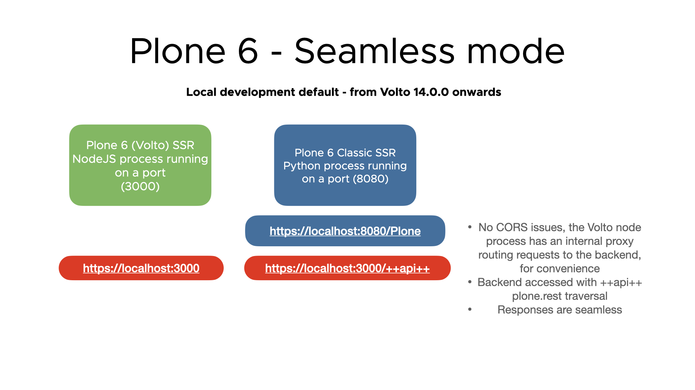
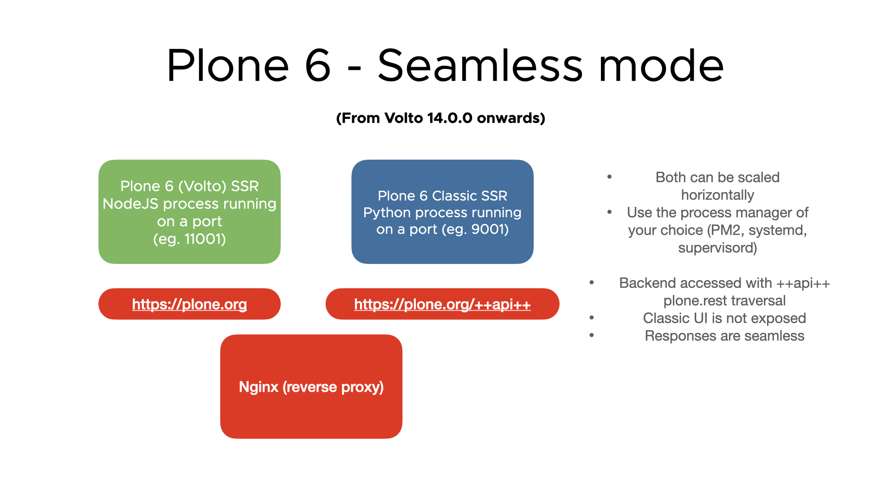

Seamless mode#
Feature history#
This was added in Volto 13 as an experimental feature. During the experimental phase, we realized of several issues hard to solve, which made us rethink the feature into its second incarnation, available since Volto 14.
The first implementation wanted to unify both backend and frontend under the same sun, using the Accept header to route the requests to the API and the Volto SSR server. As a reference and for the record, these were the major issues we encountered (plone/volto#2706):
Browsers are unable to differentiate cached responses using the
Acceptheader, so the last one (usually the JSON one) was cached, then shown in some situations (like browser restart and open tabs). The back button also showed the JSON responses under some circumstances.The use of cache servers and services is hard since they do not accept the
Varyheader (Cloudflare) and in Varnish the handling is also difficult to differentiate both requests and cache (and then invalidate) them properly.Private images/files are hard to handle.
For all these reasons, we have reconsidered and adjusted the feature a bit to overcome all the issues found in the past.
Note
Seamless mode will no longer try to unify both frontend and backend servers, differentiating them using the Accept header. However, we are sticking to the name since it also depicts the intention of the feature: to ease the setup of Volto deployments.
Challenges and goals#
Seamless' mode main challenge is to achieve Zero configuration avoiding hardcoded API_PATH or other environment vars involved, and establishing good sensible defaults when setting up deployments (and also in development). So the Developer/DevOps doesn't have to overthink their setups.
These are the problems we wanted to solve:
Avoid having to expose and publish the classic UI if you don't really need it
If possible, avoid having to rewrite all API responses, since it returns paths that do not correspond to the original object handled and "seen" from Volto, so you have to adjust them (via a code helper) in a lot of call responses.
Simplify Docker builds, making all the configuration via the runtime environment variables
Content negotiation was an amazing idea, but the reality is that it was a promise never fulfilled, and it was sparsely supported in browsers or the web ecosystem.
Features part of seamless mode#
Seamless mode is a set of features in itself. Here is a brief introduction of them:
Runtime environment variables#
All the environment variables that are configurable now work at runtime, not at build time. This works since Volto 13.
Note
Before Volto 13, you'd do:
RAZZLE_API_PATH=https://plone.org pnpm build && pnpm start:prod
From Volto 13 onwards, you can now do:
pnpm build && RAZZLE_API_PATH=https://plone.org pnpm start:prod
This brings you a lot of power since you don't have to rebuild on every config change. You can also generate builds on your CI, then deploy them anywhere.
Unified traversal ++api++#
Since plone.rest 2.0.0a1, Plone provides a way to access the RESTAPI without using the application/json Accept header. It enables a new traversal handler ++api++ that returns RESTAPI calls seamlessly, without any additional path in its responses.
Seamless mode will use this convention when setting up development and production environments for you. So if no RAZZLE_API_PATH is present, all backend calls by default will assume a ++api++ is present in your backend and will try to use it.
Use Host header to auto-configure the API_PATH#
The Host header from the request is being read by the Volto server if no RAZZLE_API_PATH is present and used in Volto from the first request on. The information read in the SSR server is passed to the client app, so it also knows who the backend is.
Advantages of the seamless mode#
Delegating to the web server the responsibility of configuring how the components of the app should relate with each other, so you don't have to configure the same thing in several points of the architecture, making the whole setup less error-prone. Combined with the sensible defaults of using the default traversal route ++api++ and the runtime variables (or the absence of them), this makes deployments far easier and more predictable.
Theoretically, you could deploy several sites using the same Volto SSR server without
recompiling (just using the Host header in the reverse proxy). Before seamless mode, you would've had to have a Volto build for every site domain.
Opens the door for http://servername/sitename deployments as well, so several sites
hosted by the same Volto SSR server.
All internal links are app ones (thanks to the ++api++ traversal), so a link to a page /my-page will be returned by the API as is. So flattenToAppURL will still be required (for old deployments) but if seamless is adopted, it won't be required anymore in the mid-term.
The Plone classic UI is not public (which in some points clients might find ugly and problematic from the SEO point of view), so indexers cannot reach it.
Repeatable docker builds (since the config will be based on runtime).
Ready to use production builds (e.g. vanilla Volto built, ready for testing), configured in runtime.


Requisites for using Seamless mode#
You need to upgrade plone.rest package to 2.0.0a1 version or later, and plone.restapi package to 8.12.1 version or later. So in your buildout, under the [versions] section:
[versions]
plone.rest = 2.0.0a1
plone.restapi = 8.12.1
or update your pip requirements.txt if you are using pip.
If you are using the official Docker Plone image, use the VERSIONS environment variable:
VERSIONS="plone.restapi=8.12.1 plone.rest=2.0.0a1"
nginx example config for seamless mode deployments#
upstream backend {
server host.docker.internal:8080;
}
upstream frontend {
server host.docker.internal:3000;
}
server {
listen 80;
server_name myservername.org;
client_max_body_size 1G;
access_log /dev/stdout;
error_log /dev/stdout;
# [seamless mode] Recommended as default configuration, using seamless mode new plone.rest traversal
# pnpm build && pnpm start:prod
location ~ /\+\+api\+\+($|/.*) {
rewrite ^/\+\+api\+\+($|/.*) /VirtualHostBase/http/myservername.org/Plone/++api++/VirtualHostRoot/$1 break;
proxy_pass http://backend;
}
# Legacy deployment example, using RAZZLE_LEGACY_TRAVERSE Volto won't append ++api++ automatically
# Recommended only if you can't upgrade to latest `plone.restapi` and `plone.rest`
# pnpm build && RAZZLE_API_PATH=http://myservername.org/api RAZZLE_LEGACY_TRAVERSE=true pnpm start:prod
# location ~ /api($|/.*) {
# rewrite ^/api($|/.*) /VirtualHostBase/http/myservername.org/Plone/VirtualHostRoot/_vh_api$1 break;
# proxy_pass http://backend;
# }
location ~ / {
location ~* \.(js|jsx|css|less|swf|eot|ttf|otf|woff|woff2)$ {
add_header Cache-Control "public";
expires +1y;
proxy_pass http://frontend;
}
location ~* static.*\.(ico|jpg|jpeg|png|gif|svg)$ {
add_header Cache-Control "public";
expires +1y;
proxy_pass http://frontend;
}
proxy_set_header Host $host;
proxy_set_header X-Real-IP $remote_addr;
proxy_set_header X-Forwarded-For $proxy_add_x_forwarded_for;
proxy_set_header X-Forwarded-Proto $scheme;
proxy_redirect http:// https://;
proxy_pass http://frontend;
}
}